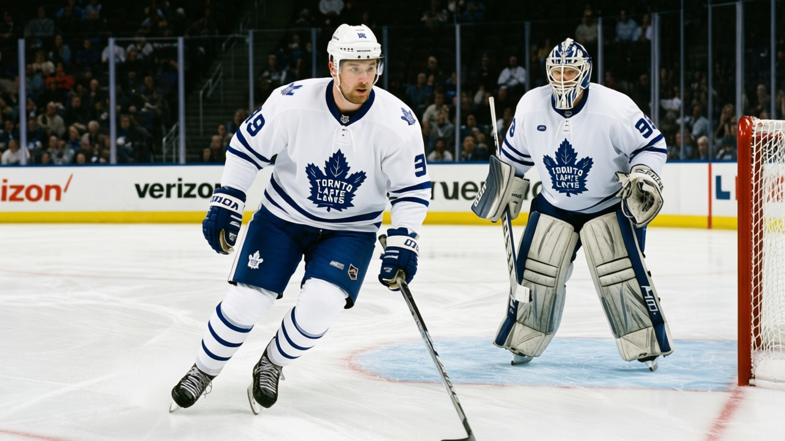

Leafs road trip starts with a matchup Washington handed them
Petr Chlup is expected to be available when the TOR Maple Leafs open their two-game road trip at WSH on Tuesday, January 17. The 18-year-old centre, out since late December with 23 points in 34 games, has a return date o…


 Sam Okafor·2 min read
Sam Okafor·2 min read